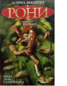

Единственный ребенок в разбойничьем замке и в разбойничьем лесу Рони, дочь атамана Маттиса, растет доброй и справедливой. Молния расколола разбойничий замок пополам, и предводители двух шаек начали враждовать между собой. Вот почему Рони запрещено встречаться с ее другом Бирком, сыном атамана Борки. Увлекательную и трогательную историю о Ромео и Джульетте из враждующих лагерей рассказала знаменитая шведская писательница Астрид Линдгрен. Сохранность: Отличная. 2003 год